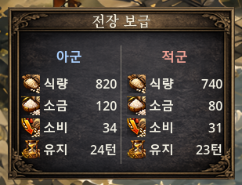
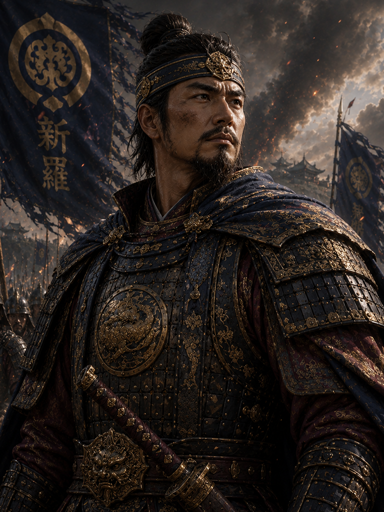
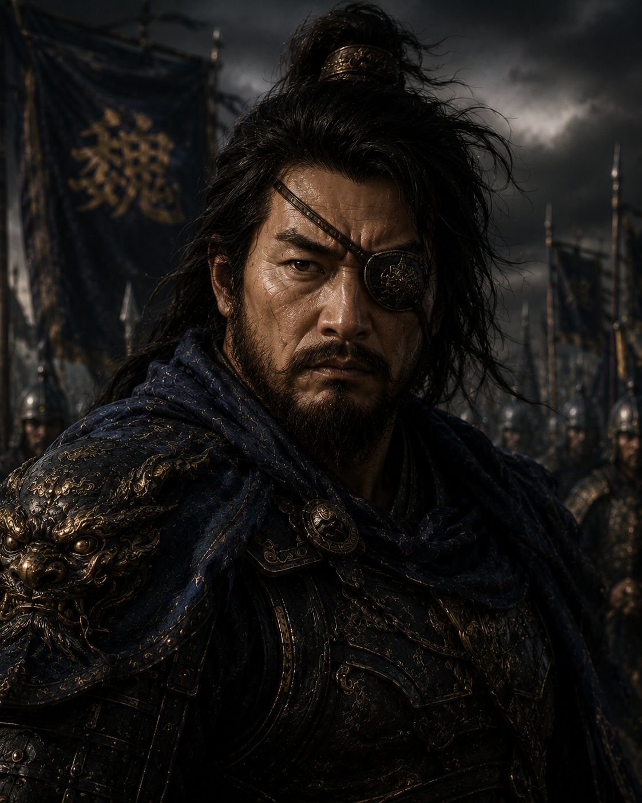
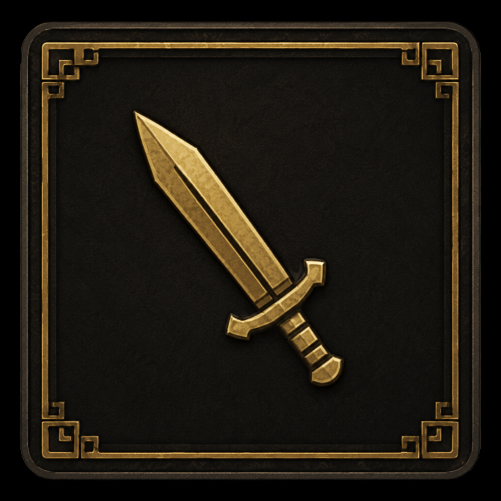
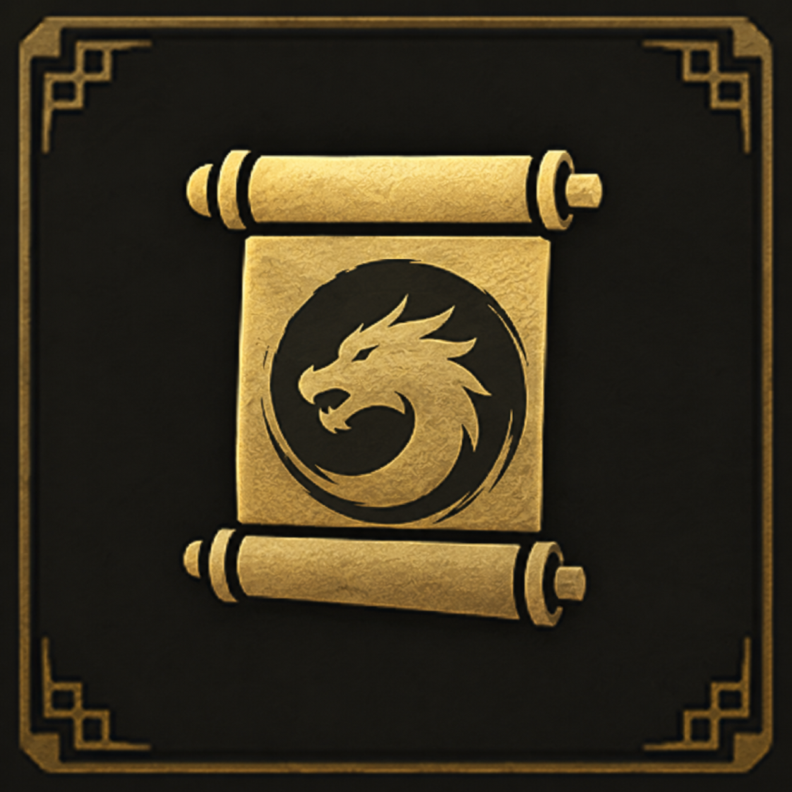
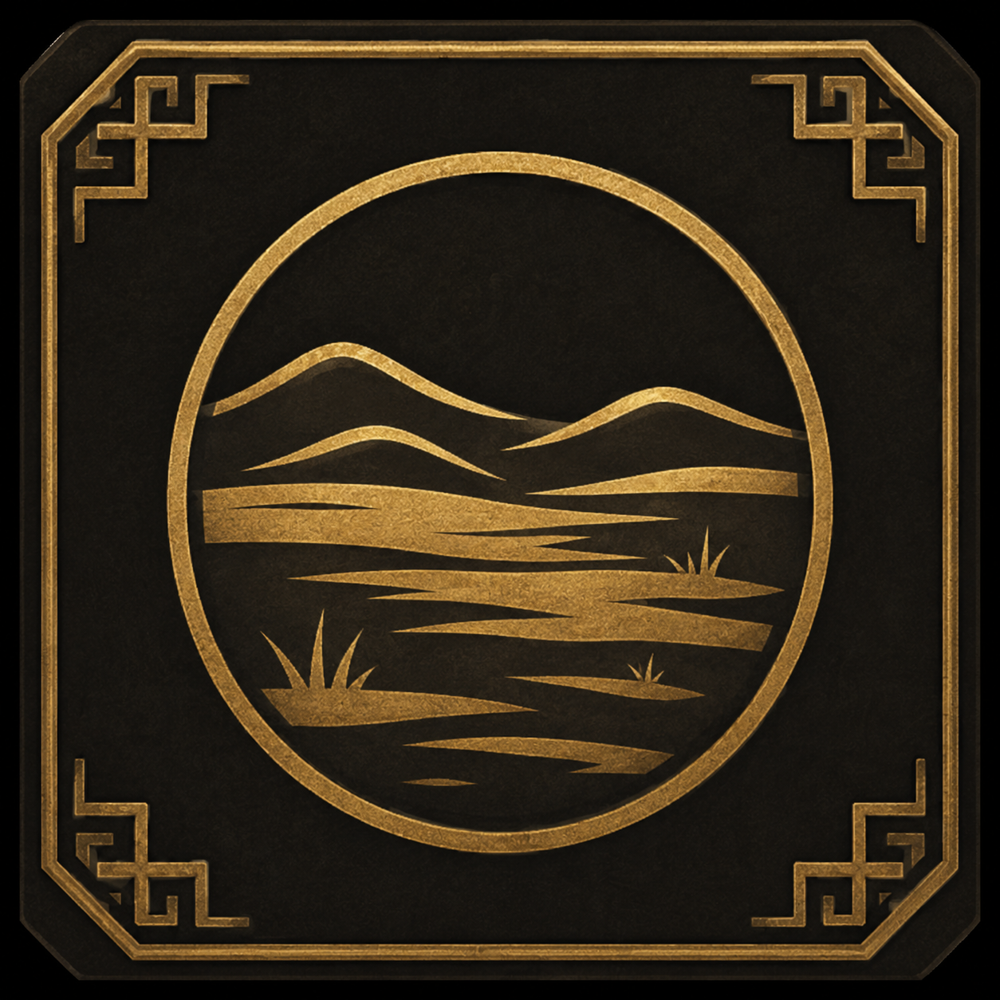
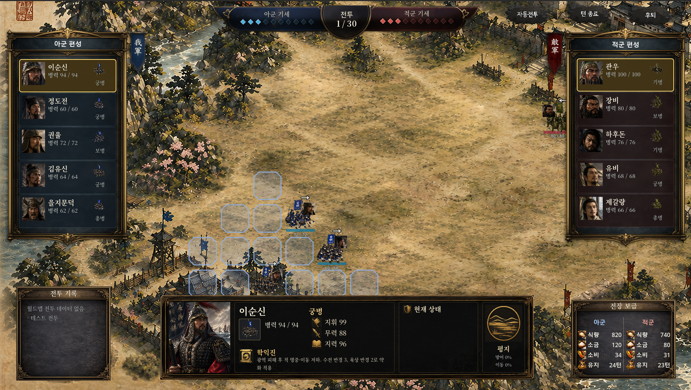

전투 HUD의 마지막 조각들
전장 보급창, 중앙 정보 HUD, 조판의 1차 완성
2026년 08월 14일숫자가 깨지지 않는 폭부터 잰다
로스터와 기세바, 전투기록창까지 자리를 잡은 다음은 전장 보급창 차례였다. 이번 단계는 실제 기능을 붙이는 게 아니라 "디자인용 조판 연습"이었다 — 실제 월드맵→전투 런타임 보급 데이터를 다루는 T02BattleSupplyPanel은 건드리지 않고, 완전히 분리된 테스트 전용 mock HUD를 새로 만들었다.
먼저 라벨부터 정리했다. 각 행은 [아이콘] + 항목명 + 숫자 형식으로, "턴당 소비"나 "유지 가능 턴"처럼 길게 풀어 쓰지 않고 식량·소금·소비·유지, 이렇게 축약형으로 고정했다.
그다음이 진짜 핵심이었다. 조판 폭을 지금 보이는 숫자가 아니라 가능한 최대 자릿수를 기준으로 설계한 것. 식량과 소금은 최대 99999(5자리), 소비는 9999(4자리), 유지는 999턴(3자리+"턴")까지 들어가도 화면이 깨지지 않아야 한다는 기준을 세웠다. 지금 보이는 숫자가 세 자리라고 그 폭에 맞춰버리면, 나중에 게임이 커져서 숫자가 늘어나는 순간 레이아웃이 무너진다. 그래서 QA 단계에서 이 최대값들을 실제로 넣어보며 검증할 수 있는 구조로 짰다.

적군도 같은 규칙으로
아군 로스터에 있던 "현재 행동 장수 강조" 규칙을 적군 쪽에도 똑같이 적용했다. 현재 행동 중인 적장 카드 딱 하나만 약 2px 금색 테두리와 옅은 황갈색 배경으로 강조하고, 텍스트·초상·병종 정보는 그대로 유지했다. 너무 강한 순적색 glow는 쓰지 않기로 했다 — 위협적으로 보이게 하려다 화면이 조잡해지는 걸 피한 것.
중앙 하단, 정보창의 뼈대
다음은 화면 중앙 하단에 들어갈 "현재 행동 장수" 정보창이었다. 먼저 자리부터 잡았다.
- 초상화 — 큰 네모
- 장수 정보 — 이름, 병종 네모+병종명, 병력/부상, 지휘·무력·지력 아이콘+숫자, 고유특기 네모+이름+짧은 효과
- 상태 정보 — 아이콘+효과명+남은 턴을 여러 줄로 전부 표시, hover 시 상세 설명
- 지형 — 지형 이미지용 네모, 지형명, 추후 지형 효과
여기서 쓰는 "초상화"는 로스터의 작은 얼굴 크롭과는 다른 규격이다. 로스터는 카드 안에 들어가는 작은 정사각형이지만, 중앙 정보창의 초상은 화면 하단을 크게 차지하는 세로형 인물 이미지라서 표정과 갑옷 디테일까지 살아있는 별도 컷을 써야 했다.




중앙 정보창용 세로 초상 예시 — 김유신·관우·하후돈·장비
이때 각 스탯에 쓸 아이콘도 함께 만들었다. 무력은 검, 지력은 책, 고유특기는 용이 새겨진 두루마리, 지형(평지)은 산과 들을 담은 원형 문양으로.



자리를 다 잡은 다음엔 실제 데이터를 연결했다. 이름·초상·병종·병력(현재/최대)·지휘·무력·지력·고유특기·상태·지형까지 각각의 실제 소스를 정확히 찾아 연결했고, 없는 값을 억지로 채워 넣지는 않았다 — 부상 수치는 당분간 숨기고, 병력은 현재/최대만 유지하기로 했다.
마무리 다듬기
세로 초상을 정보창에 연결하고, 초상 우하단에 고유특기 사용 가능 여부를 알리는 Ready 깃발을 넣었다. 중앙 정보창은 좀 더 키우고 상태창은 줄이는 비율 조정도 했고, 고유특기 설명이 2줄로 안정적으로 보이게 다듬었다. 상태 아이콘 자리도 값이 없을 때 레이아웃이 흔들리지 않도록 고정해뒀다.
이 과정에서 자잘한 정리도 같이 처리했다. ready라는 지역변수명이 Node의 ready 시그널과 겹쳐서 나던 shadowing 경고를 skill_ready로 이름을 바꿔 없앴고, stretch_mode를 TextureRect.StretchMode로 명시적으로 캐스팅해서 enum 관련 경고도 정리했다(Godot 공식 문서로 stretch_mode가 StretchMode enum 프로퍼티라는 것도 확인했다). 시각적으로는 상태 제목 앞 아이콘만 남기고 그 아래 개별 상태 행(공격·방어 상승, 피해 감소, 반격 강화 등) 앞의 네모 아이콘은 숨겼다. 행동을 마친 아군 카드는 완전히 꺼진 것처럼 검게 보이지 않도록, 기존 Ready 프레임을 얇은 청회색 완료 프레임으로 재활용해서 표시했다 — 이 처리는 공격 애니메이션이 재생되는 동안에는 건드리지 않게 막아뒀다.
완성된 화면
여기까지 오니 로스터, 기세바, 전장 보급, 전투기록, 중앙 정보창까지 전투 화면을 이루는 조각들이 전부 한 화면에 모였다.

아군 로스터엔 이순신·정도전·권율·김유신·을지문덕이, 적군 로스터엔 관우·장비·하후돈·유비·제갈량이 서 있다. 현재 행동 중인 이순신을 중앙 정보창이 잡아내고 있고, 옆으로는 학익진 고유특기 설명과 "평지" 지형 표시까지 한 화면 안에서 전부 확인된다.
토요일 밤 "HUD 하나도 안 되네"에서 시작해서, 로스터 프레임 → 군기 → 전투기록 → 전장 보급 → 중앙 정보창까지, 전투 화면을 이루던 조각들이 이제 거의 다 맞춰졌다.
앞으로
남은 건 이 완성된 조판에 나머지 스킬·상태이상·협동 공격 같은 실제 전투 이벤트를 연결하는 것과, 지형 효과처럼 아직 "추후"로 미뤄둔 항목들을 채우는 일이다.